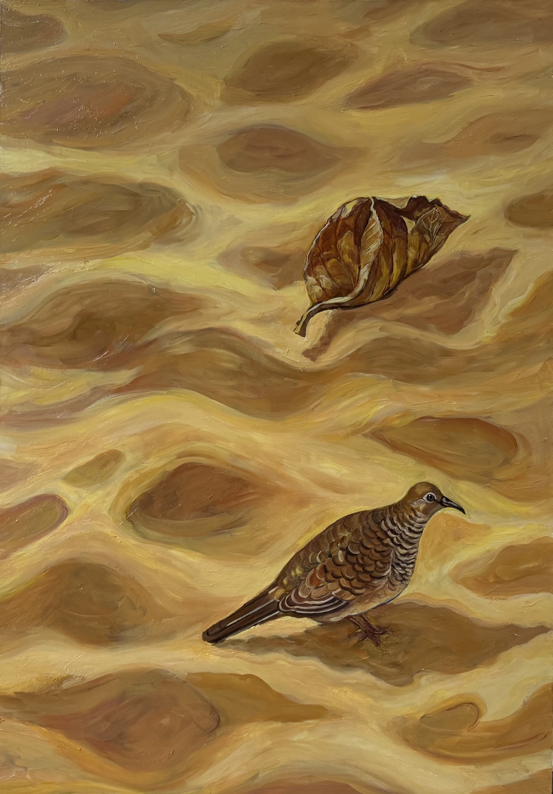

It and It
它与它

- Artwork ID / 作品编号
- KW-O-000026
- Year / 年份
- 2026
- Medium / 媒介
- Oil on canvas / 布面油画
- Dimensions / 尺寸
- 100 × 70 cm (H × W / 高 × 宽)
About the work / 作品介绍
A bird and a dry leaf share a stretch of golden sand. The rhythms of the sand lead the eye away from the bird and leaf and back to them. A space remains between the two forms, held within the same landscape shaped by wind.
一只鸟和一片枯叶出现在金黄色的沙地上。起伏的沙痕把目光从鸟与叶之间引开，又带回它们身上。两者相隔一段距离，共处在同一片随风变化的环境中。